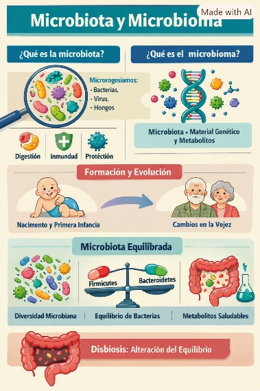
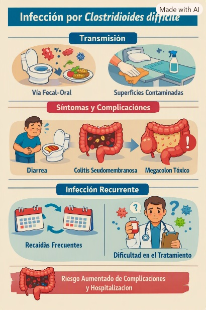
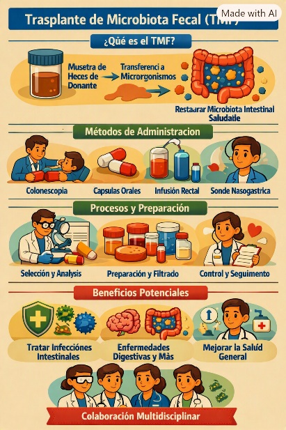
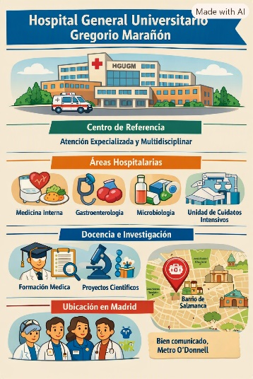
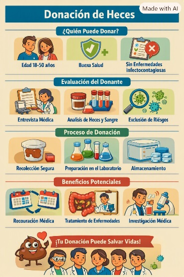
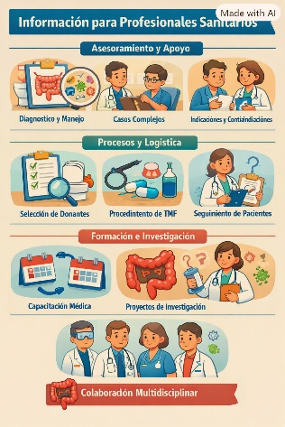

🧬 Microbiota, Microbioma y Salud Intestinal
La microbiota es el conjunto de microorganismos —bacterias, hongos, virus y otros— que viven en nuestro cuerpo, especialmente en el intestino. El microbioma incluye estos microorganismos, su material genético y las sustancias que producen.
El ser humano alberga una enorme cantidad de microorganismos que cumplen funciones esenciales: ayudan a digerir alimentos, producen vitaminas, regulan el metabolismo, protegen frente a infecciones y colaboran en el desarrollo del sistema inmunitario.
Formación y evolución de la microbiota
La colonización comienza muy temprano en la vida y se va modificando según factores como el tipo de parto, la lactancia, la dieta, el uso de antibióticos y el estilo de vida. Durante la infancia la microbiota es menos estable y más variable entre individuos. En la edad adulta adquiere mayor estabilidad, y en personas mayores puede sufrir cambios asociados al envejecimiento.
¿Qué es una microbiota equilibrada?
No existe una microbiota "única" o universal, pero sí características asociadas a buena salud intestinal:
- Alta diversidad de microorganismos.
- Equilibrio entre los principales grupos bacterianos.
- Producción de metabolitos beneficiosos, como los ácidos grasos de cadena corta.
Cuando este equilibrio se altera hablamos de disbiosis, que puede relacionarse con diversas enfermedades, entre ellas la infección por Clostridioides difficile.


🦠 Infección por Clostridioides difficile
C. difficile es una bacteria capaz de producir toxinas que dañan el intestino y causar cuadros que van desde diarrea leve hasta colitis grave. Es una causa frecuente de diarrea asociada a antibióticos y puede afectar tanto a personas hospitalizadas como a personas en la comunidad.
Transmisión
Se transmite por vía fecal-oral, a través del contacto con personas infectadas o superficies contaminadas. Sus esporas son muy resistentes y pueden persistir en el entorno.
Mecanismo de enfermedad
Cuando la microbiota intestinal se altera —por ejemplo, tras el uso de antibióticos— la bacteria puede proliferar y liberar toxinas que inflaman y lesionan la mucosa intestinal. En casos graves puede producir pseudomembranas, megacolon tóxico o enfermedad fulminante.
Infección recurrente
Entre un 15% y un 40% de los pacientes pueden sufrir recurrencias. Estas recaídas aumentan el malestar, la estancia hospitalaria y el riesgo de nuevas complicaciones.


🧬 Trasplante de Microbiota Fecal (TMF)
El TMF consiste en transferir microbiota intestinal procedente de un donante sano al intestino de un paciente, con el objetivo de restaurar el equilibrio perdido. Es el tratamiento más eficaz para la infección recurrente por C. difficile, con tasas de resolución muy elevadas.
Evidencia y seguridad
Numerosos estudios han demostrado que el TMF es seguro y altamente eficaz en pacientes con recurrencias múltiples. También se investiga su posible utilidad en otras enfermedades, aunque actualmente solo está reconocido para la infección recurrente por C. difficile.
¿Cómo se realiza?
- Selección estricta de donantes mediante cuestionarios y pruebas analíticas.
- Procesamiento de la muestra para concentrar la microbiota y eliminar impurezas.
- Administración por colonoscopia, cápsulas, enemas o sondas gastrointestinales.
El Hospital General Universitario Gregorio Marañón dispone de banco de heces y TMF en cápsulas, lo que facilita el acceso y la seguridad del procedimiento.
Preparación y recuperación
El paciente suspende antibióticos 24–48 horas antes. La recuperación suele ser rápida, con molestias leves y transitorias según la vía de administración.


🏥 Actividad del Hospital General Universitario Gregorio Marañón
Nuestro hospital desarrolla un programa clínico dedicado al manejo de la infección por C. difficile y a la aplicación del TMF. Se trata de un servicio altruista, integrado en el sistema sanitario público y orientado exclusivamente al beneficio de los pacientes.
Nuestro trabajo incluye
- Atención especializada a pacientes con infección recurrente por C. difficile.
- Banco de heces y TMF en cápsulas.
- Procesamiento seguro y estandarizado de muestras.
- Coordinación entre Enfermedades Infecciosas, Microbiología, Gastroenterología y Hematología.
- Investigación y formación en microbiota y TMF.


💚 Donación de heces
El TMF depende de personas sanas que desean colaborar de forma altruista. La selección del donante es rigurosa para garantizar la seguridad del receptor.
Requisitos generales
- 18–50 años.
- Buena salud general.
- No haber tomado antibióticos recientemente.
- No padecer enfermedades gastrointestinales crónicas.
Formulario: Quiero ser donante


🧑⚕️ Información para profesionales sanitarios
Esta sección está dirigida a profesionales que atienden pacientes con infección por C. difficile o que desean consultar aspectos relacionados con el TMF.
Ofrecemos
- Asesoramiento clínico en diagnóstico y manejo de la infección.
- Revisión de casos complejos.
- Información sobre indicaciones, contraindicaciones y logística del TMF.
- Colaboración en investigación y formación.
Consulta: Contacto profesional TMF
